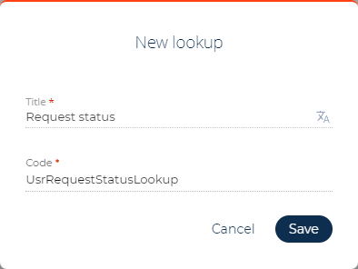
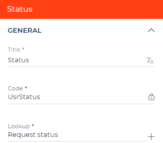
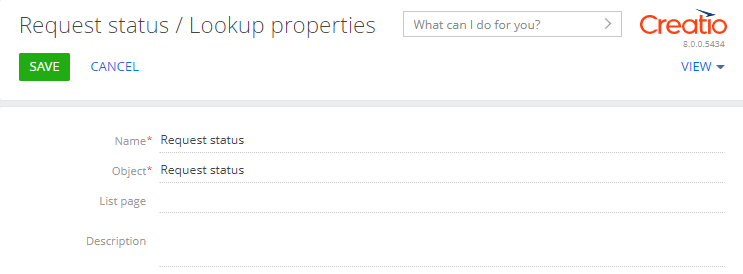
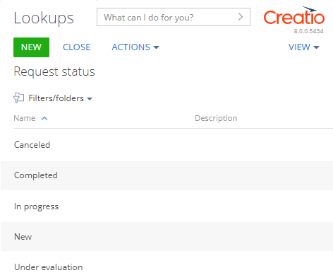

1. Настроить интерфейс страницы
- Используя шаблон Данные и бизнес-процессы (Records & business processes), создайте пользовательское приложение Requests. Для этого воспользуйтесь инструкцией, которая приведена в статье Создать пользовательское приложение.
-
В рабочей области страницы приложения Requests откройте страницу Страница записи Requests (Requests form page).
Поле Название (Name) по умолчанию добавлено на страницу Страница записи Requests (Requests form page).
-
Добавьте поле, которое содержит заявителя.
- В рабочую область Freedom UI дизайнера добавьте новое поле типа Выпадающий список (Dropdown).
-
На панели действий Freedom UI дизайнера нажмите на кнопку и на панели настройки заполните свойства поля:
- Заголовок (Title) — "Заявитель" ("Applicant").
- Код (на английском) (Code) — "UsrApplicant".
- Выбор объекта (Lookup) — выберите "Контакт" ("Contact").

-
Добавьте поле, которое содержит состояние заявки.
- В рабочую область Freedom UI дизайнера добавьте новое поле типа Выпадающий список (Dropdown).
-
На панели действий Freedom UI дизайнера нажмите на кнопку и на панели настройки заполните свойства поля:
- Заголовок (Title) — "Состояние" ("Status").
- Код (на английском) (Code) — "UsrStatus".
-
Выбор объекта (Lookup) — нажмите на кнопку и заполните свойства справочника:
- Заголовок (Title) — "Состояние заявки" ("Request status").
- Код (на английском) (Code) — "UsrRequestStatusLookup".
Для добавления справочника нажмите Сохранить (Save).
 - На панели инструментов Freedom UI дизайнера нажмите на кнопку Сохранить (Save).
-
Заполните справочник Состояние заявки (Request status).
- Перейдите на страницу приложения Requests и нажмите Запустить приложение (Run app).
- Перейдите в дизайнер системы по кнопке
 . В блоке Настройка системы (System setup) перейдите по ссылке Справочники (Lookups).
. В блоке Настройка системы (System setup) перейдите по ссылке Справочники (Lookups). -
Для Creatio версии 8.0.0 зарегистрируйте справочник. Начиная с версии 8.0.1 справочник регистрируется автоматически.
-
На панели инструментов раздела Справочники (Lookups) нажмите Добавить справочник (New lookup) и заполните свойства справочника:
- Название (Name) — "Состояние заявки" ("Request status").
- Объект (Object) — выберите "Состояние заявки" ("Request status").
 - На панели инструментов страницы настройки справочника нажмите Сохранить (Save) для сохранения справочника.
-
- Откройте справочник Состояние заявки (Request status).
-
На панели инструментов страницы настройки справочника нажмите Добавить (New) и заполните значения справочника:
- "Новая" ("New").
- "Оценивается" ("Under evaluation").
- "Выполняется" ("In progress").
- "Отменена" ("Canceled").
- "Выполнена" ("Completed").

- Перейдите на страницу Страница записи Requests (Requests form page) и на панели действий Freedom UI дизайнера нажмите на кнопку
 . После сохранения настроек страницы открывается исходный код страницы Freedom UI.
. После сохранения настроек страницы открывается исходный код страницы Freedom UI.
2. Настроить условие блокировки поля
Бизнес-логика настраивается в дизайнере клиентского модуля. В этом примере настроим условие блокировки поля.
-
В секцию viewModelConfig добавьте атрибут IsApplicantReadonly, который хранит информацию о разрешении контакта на редактирование поля Заявитель (Applicant).
-
В секции viewConfigDiff привяжите свойство readonly элемента UsrApplicant к атрибуту IsApplicantReadonly модели. Если заявка выполнена, то заблокировано поле Заявитель (Applicant). Для другого статуса заявки поле доступно для изменения.
-
В секции handlers добавьте пользовательскую реализацию обработчика системного запроса crt.HandleViewModelAttributeChangeRequest. Обработчик выполняется при изменении значения любого атрибута (в т. ч. при загрузке значений атрибутов из источника данных). Обработчик проверяет значение атрибута UsrStatus. Если новое значение атрибута ссылается на значение "Выполнена" ("Completed") справочника Состояние заявки (Request status), то для атрибута IsApplicantReadonly устанавливается значение true, в другом случае — false. Уникальный идентификатор статуса выполненной заявки, который установлен в качестве значения константы completedStatusId, содержится в соответствующей колонке строки записи справочника Состояние заявки (Request status). Чтобы отобразить колонку Id в реестре справочника Состояние заявки (Request status), воспользуйтесь инструкцией, которая описана в статье Реестр раздела. В нашем примере идентификатор статуса выполненной заявки — "6d76b4e0-6507-4c34-902b-90e18df84153".
Полный исходный код схемы страницы - На панели инструментов дизайнера клиентского модуля нажмите Сохранить (Save).
Результат выполнения примера
Чтобы посмотреть результат выполнения примера:
- Перейдите на страницу приложения Requests и нажмите Запустить приложение (Run app).
- На панели инструментов приложения Requests нажмите Добавить (New).
- В поле Название (Name) введите значение "Requests's name".
- В поле Заявитель (Applicant) выберите "Bruce Clayton".
- В поле Состояние (Status) выберите "Выполнена" ("Completed").
В результате выполнения примера поле Заявитель (Applicant) заблокировано для выполненной заявки.
Поле Заявитель (Applicant) доступно для изменения для другого состояния заявки (например, "Новая" ("New")).